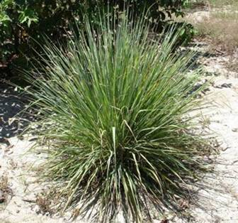

HORT 282 :: Lecture 08 :: LEMONGRASS

LEMONGRASS
(Cymbopogon flexuosus, Poaceae)
 Lemongrass commonly known as “East Indian Lemongrass” is a perennial and multicut aromatic grass. The prefix ‘lemon’ owes to its typical lemon like odour, which is mainly due to the presence of citral, a cyclic monoterpene.
Lemongrass is the source of Lemongrass oil, a good source of natural citral, which is used s a basic raw material for synthesis of β-ionone used for synthesis of a number of useful aromatic compounds and Vitamin- A. Lemongrass oil is thus used as a main substitute for ‘Cod liver oil’. Citral itself is used in perfumery for various grades of soaps detergents, cosmetics and flavour agent for soft drinks. Consumption of Lemongrass in Ayurvedic preparation like Balm is also increasing. The present domestic requirement is about 150 MT/year and about 70 MT is exported every year. The total world production is estimated to 1300 MT/year.
The crop provides maximum herb yield from second and third year after planting and thereafter declines. The leaves yield essential oil on steam distillation containing 70-90% citral.
Soil & Climate
It flourishes in a wide variety of soils ranging from rich loams to poor laterite; also suitable to ‘jhum fallow’, hill slopes and flood free degraded land, best suited to >well drain sandy loam. Water logged conditions should be avoided as they are unsuitable for its cultivation.It requires a warm humid climate with plenty of sunshine and rainfall ranging from 1800 to 3000 mm. High temperature and sunshine are conducive to the development of oil in the plant.
Varieties
The following varieties are recommended for commercial cultivation:
(i) For irrigated condition C.K.P-25 released by RRL, Jammu
(ii) Krishna developed by CIMAP both for irrigated and rainfed and also hill slopes (iii) Nima a dwarf variety developed by CIMAP found promising. The citral content of Nima is much higher than Krishna. Oil recovery is in between 0.8-1.0 %.
(iv)Another suitable variety for NE region is Jor Lab L-2 developed by RRL, Jorhat.
Preparation of root slips
It is propagated vegetatively by obtained from well-grown clumps. Tops of culms are cut off within 20-25 cm above ground. The culm (root portion) is divided into slips containing 2-3 tillers. The lower sheath is removed to expose young roots and the old roots are clipped off keeping the slip 25-30 cm long
Spacing
45 x 45 cm in plains or 60 x 45 cm in sloppy land with a requirement of slips 45,000-50,000/ha.
Planting
Planting is done in May-June. However, with irrigation planting can be done during any month of the year except December-January. One or two slips are planted into each hole, about 5-8 cm deep. It is better to plant on ridges in high rainfall areas. Slips are transplanted firmly into the ground. Plants get established well within 25-30 days after planting.
Manures and fertilizer application:
FYM: 10 t/ha to be applied and mixed well at the time of final land preparation.
Fertilizer
N, P205 & K20-150: 60: 60 kg/ha/year should be applied along with adequate quantity of organic matter. Before planting, the field is thoroughly prepared and the full dose of phosphorus and potash is incorporated. The nitrogen is applied in six equal split doses at two monthly intervals. For economic use of fertilizers the soil should be analyzed first.
Irrigation
Irrigation is given immediately after planting when planting is done in dry days. Thereafter two irrigations are given at 10 days interval to establish the crop. During dry season after each harvest one irrigation and subsequently application of recommended dose of fertilizers are to be followed for optimum herb production. For undulating areas sprinkler irrigation is advisable.
Weeding and interculture
Lemongrass has the weed suppression capacity. One hand weeding at 25-30 days followed by one hoeing at 40-60 days after planting is enough to control weeds. After each harvest a nominal weeding and earthing up of plants is beneficial for the next flush.
Mulching
Distillation waste (spent grass) applied as organic mulch @ 3 tons/ha in between the rows has been found very effective in controlling weeds and maintaining soil moisture as well.
Pests and Diseases
Lemongrass may be attacked by leaf blight caused by Carbularia veruciformis that can be controlled by benzimidazole like Benlate 50 WP at 0.2% @ 550-750 litre/ha at 10 days interval.
The most important pest is scale insect, which produces yellow spot on the stem and sucks the sap of the leaves and stem. The insect can be controlled by spraying 0.5 % Dimethoate.
Age of harvesting
Citral is considered as quality marker of lemongrass oil, which is influenced by age of crop
At harvesting Citral content of Krishna variety in Assam condition as influenced by age of cutting is given below:
Time of harvesting |
Crop age at harvesting |
Citral content in oil |
April |
52 days |
71% |
May |
85 days |
84% |
June |
129 days |
76 % |
This shows that after first cutting the subsequent harvests should be done within 2 – 3 months interval. But always crop should be harvested before flowering for both quality and oil yield.
Harvesting
First harvest is taken at 4 months age of the crop and subsequent harvests are at 2 – 3 months intervals. Harvesting is done by cutting the grass 10 cm above the ground level. During first year 3 cuttings and subsequently 5 cuttings per year can be taken subject to weather conditions and irrigation management. Both immature and over mature crops give low yield and oil of poor quality. The optimum period of harvesting when grown on hilltop or upper slopes is 75 days while at foothill and plains it is 60 days.
Seasonal variation in oil recovery (Var. Krishna) as observed in Assam:
Months |
Oil recovery in stainless steel unit (w/v) |
July |
0.7 % |
August |
0.55 % |
September |
0.56 % |
October |
0.88 % |
November |
0.78 % |
Yield
The average herb yield /ha and oil production is as under:
Year |
1st year |
2nd year |
3rd year |
4th year |
Herb yield (q) |
215 |
360 |
360 |
215 |
Oil yield at 0.7 % recovery (kg) |
150 |
250 |
250 |
150 |
Distillation
The oil extracted from the wilted herb by steam distillation in stainless steel unit. The factors influencing the oil production during distillation are: (i) Storage of the plant material, (ii) Treatment (wilting and cutting into pieces) of the material and (iii) The method of distillation.
The major source of loss is by oxidation and resinification of the essential oil. So if the material is to be stored before processing, it should be kept in a dry atmosphere with limited air circulation. The essential oils are present in the oil glands, oil sacks and glandular hairs of the plant. Therefore, before distillation, the day wilted plant material is cut into small pieces enable them to expose directly as many oil glands as is possible. Once the plant material has been reduced in size, it must be distilled immediately to avoid oil loss. The wilted leaves are steam distilled which takes about 3 hours. Dipping the chopped lemongrass in sodium chloride solution for 24 hours at 1-2 % concentration before distillation has been found to increase the citral content.
Utilization of spent material
The residue thrown out after the extraction of oil is called spent grass. Cattle relish it when it is hot or is converted into silage by adding a dilute solution of molasses. Besides a good source of manure and mulching material the spent is used as fuel for distillation after drying and also cheap packing material for fragile objects.
***********
- Lemongrass is commonly known as ____________
- Lemongrass oil is used as a main substitute for ___________
- Lemongrass oil is a good source of natural _____________
- Lemongrass is propagated by _______________
- Lemongrass oil is extracted by ___________________ method.
| Download this lecture as PDF here |